מהפכת המהפכה האג'נטית בפיתוח למידה
~30 שניות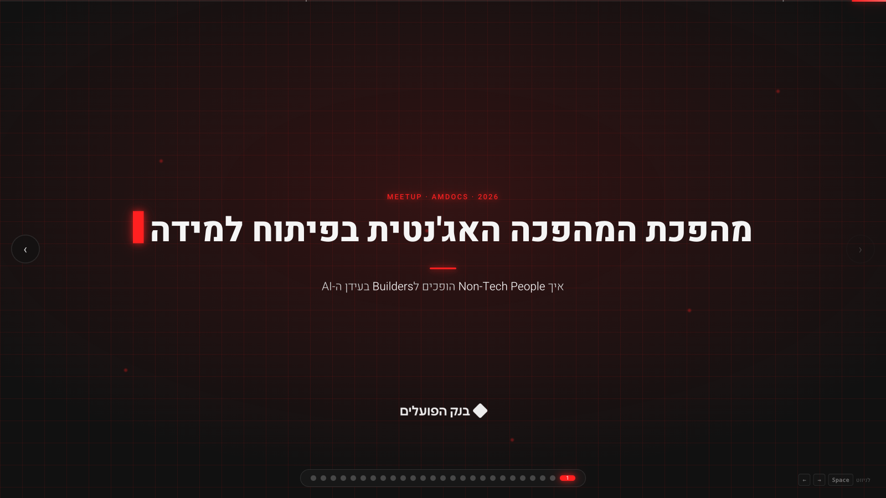
קריינות, פתיחה
"ערב טוב לכולם. אני אבי לוי, מנהל צוות פיתוח למידה בקמפוס פועלים."
"רגע, לפני שנתחיל, אני רוצה להגיד משהו במילה אחת: אנחנו נמצאים באמצע התהליך האבולוציוני של שימוש בבינה מלאכותית בארגונים."
"התחלנו ב-GPT. כולנו זוכרים את הגל הראשון, פרומפטים פשוטים, צ'אט-בוטים. היום אנחנו כבר נמצאים בעולם אג'נטי, סוכנים, צוותי AI, מערכות שלמות."
"והכלי הזה, האג'נטיקה הזו, הוא לא צעצוע. הוא מאפשר לנו לעשות דברים שפעם דרשו זמן עבודה אדיר, או עלויות גבוהות, ועכשיו אפשר לעשות אותם בצוות קטן, בימים, מהבית."
"היום, אני אספר לכם איך הצוות שלנו לקח את הכלים האלה ובנה איתם מערכת שלמה לניתוח פערי ידע ל-1,250 בנקאים, ב-168 סניפים, בלי לכתוב שורת קוד אחת. וזה לא מצגת תיאורטית. זה פרויקט שעשינו, הוא רץ, ויש בו עוד הרבה לשפר. אבל הוא אמיתי."
ai.mp4
משך הסרטון, 18 שניות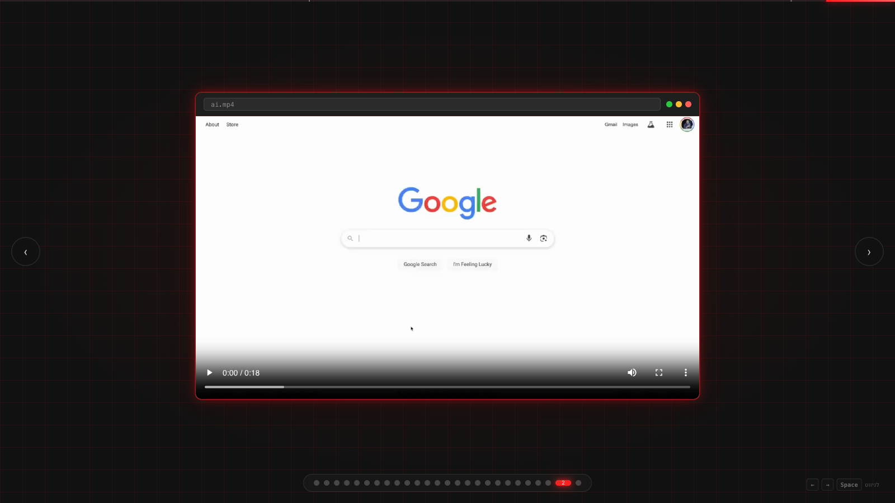
קריינות, גשר לוידאו ואחרי
"לפני שאני נכנס לעניינים, רציתי שתראו את הסרטון הקצר הזה. הוא לא שלי, הוא של AI גנרטיבי. תקשיבו ביחד איתי."
[הסרטון רץ, שתיקה מלאה, פאוזה של שנייה אחרי שנגמר]
"כשראיתי את הסרטון הזה לראשונה, חשבתי לעצמי: 'רגע, זה מה שכל גורו AI אומר לנו עכשיו'?"
"היום, אני לא הולך להיות אחד מהם. אני בא לדבר על עבודה אמיתית, לא על הבטחות."
"גם לכם נמאס מכל הגורואים?"
~25 שניות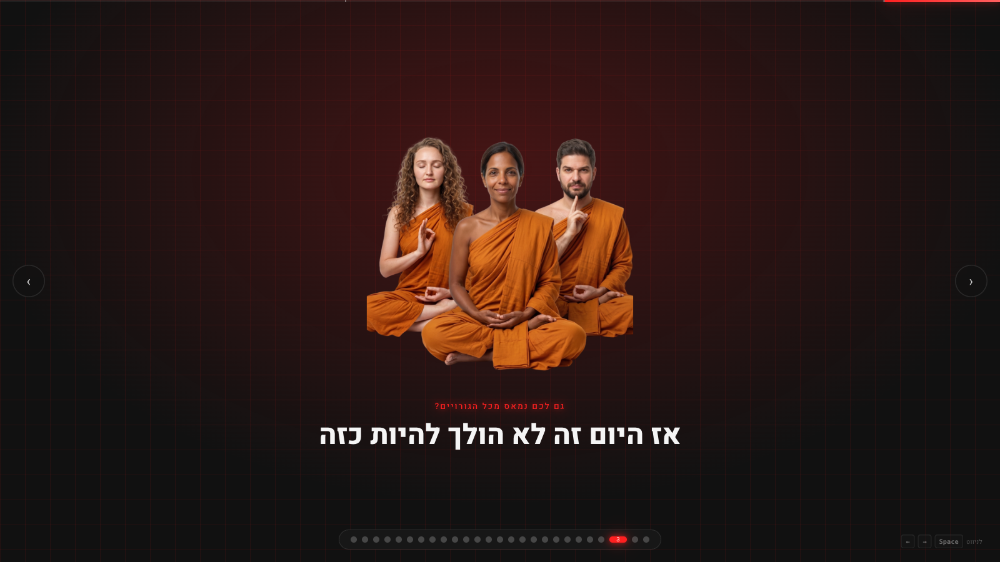
קריינות, החוזה עם הקהל
"כולנו ראינו את הסרטונים האלה: '5 פרומפטים שישנו את חייך'. 'AI יחליף אותך עד 2026'. 'הוא כתב לי אפליקציה שלמה ב-3 דקות, שתפו'."
"אז היום, ההצגה הזו לא הולכת להיות ככה."
"אני לא גורו. אני מנהל צוות שניסה משהו, חלק עבד, חלק נכשל, וחזרנו ועשינו אותו שוב, ועוד פעם."
"אני בא לשתף איתכם את האמת: עבודה אמיתית שדרשה חשיבה, חקר, נסיונות שלא צלחו, וגם הצלחות שלא צפינו. זה ההבדל בין סרטון על AI, לבין מערכת שעובדת."
הצוות + Super Group
~30 שניות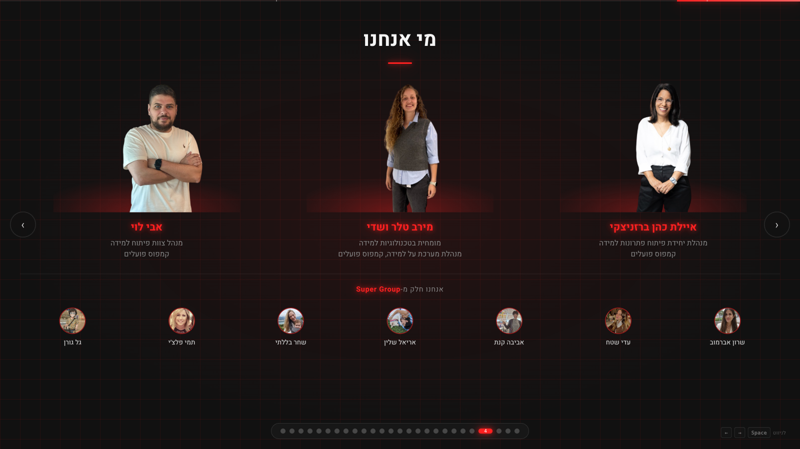
קריינות, הצגת הצוות
"מאחורי הפרויקט הזה עומדים שלושה אנשים, ואני רוצה להציג כל אחד בקצרה, כי הם הסיפור."
"ראשונה, איילת כהן ברזניצקי, מנהלת היחידה שלנו. היא זו שראתה ראשונה את הצורך, גייסה את הנהלת החטיבה הקמעונאית, וניהלה את כל מערך השילוש הקדוש שאני אגיע אליו עוד מעט."
"שנייה, מירב טלר ושדי, מומחית הטכנולוגיה והמערכות. ה-LMS, האינטגרציות, הפרטיות, אבטחת המידע, הכל עליה. בלי מירב, הפרויקט לא יוצא לפועל בכלל."
"ואני, אבי לוי, הובלתי את הצד של ה-AI ובניית המנוע. הצד שאני אספר עליו הכי הרבה היום."
"ואנחנו לא לבד. אנחנו חלק מ-Super Group, קבוצת-על של 7 אנשים מקצוענים בקמפוס פועלים, שכל אחד תרם, מי בקריאייטיב, מי בפדגוגיה, מי באקדמי. הקרדיט המלא בסוף המצגת."
91% מאמינים, רק 38% מוכנים
~30 שניות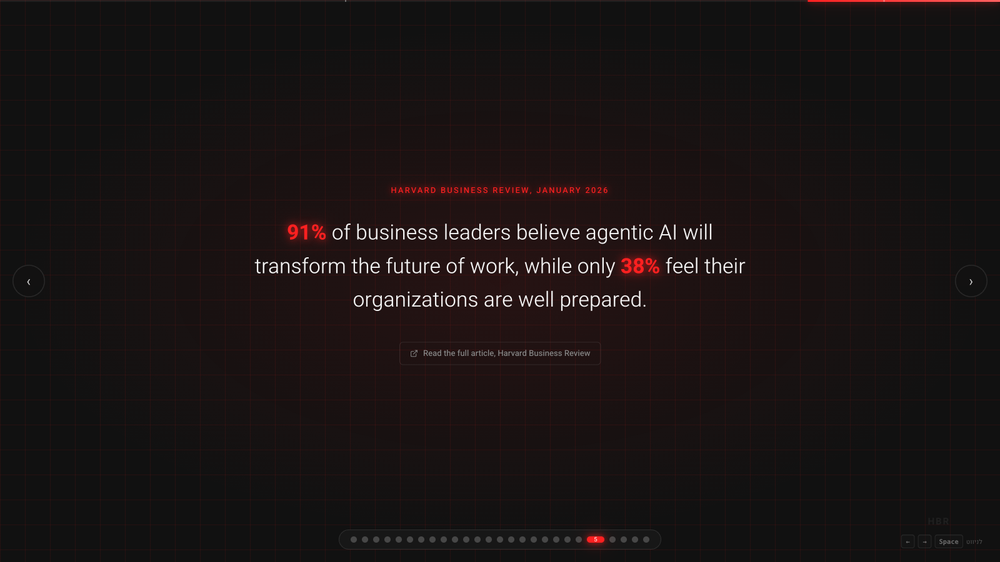
קריינות, הפער הגדול
"אני תמיד מתחיל ככה: קצת מספרים, כי חייבים."
"הרווארד ביזנס ריוויו, סקר טרי מינואר 2026: 91 אחוז ממנהלי העסקים חושבים שטרנספורמציה אג'נטית היא העתיד של עולם העבודה. הם רואים את זה בא."
"אבל, ופה יש אבל ענק, רק 38 אחוז מהם מרגישים שהארגון שלהם מוכן לקבל את הטרנספורמציה הזו."
"הפער הזה, 53 נקודות אחוז, זה הפער שאנחנו, אנשי הלמידה, צריכים לסגור. זה לא תפקיד של מהנדסי הסיסטם, זה התפקיד שלנו."
"כי בסופו של דבר, ההכנה לטרנספורמציה הזו היא לא טכנולוגית, היא אנושית. ואיך עושים את זה? המאמר הבא ירמוז."
נקודת המפנה, 10-25%
~25 שניות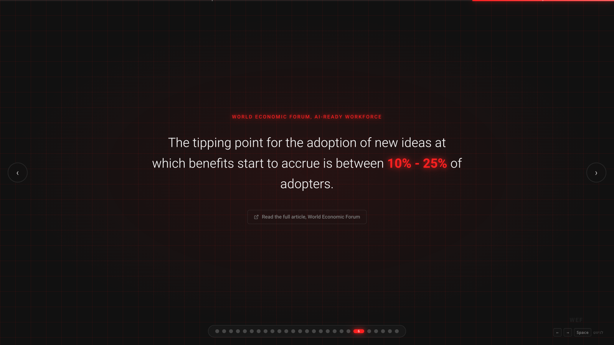
קריינות, Early Adopters
"ה-World Economic Forum מצא משהו מעניין: נקודת המפנה לאימוץ של רעיון חדש בארגון מתחילה לזרוח בין 10 ל-25 אחוז מהמאמצים."
"מה זה אומר בעברית פשוטה? לא צריך להמתין שכל 8,500 העובדים בבנק יהיו AI-Ready."
"מה שצריך, זה מטה קטן של early adopters, צוות אחד, מחלקה אחת, שיודע ליצור תוצאות מוחשיות. וזה כבר מספיק כדי להזיז את כל העגלה."
"אנחנו, מחלקת הלמידה בקמפוס פועלים, היינו ה-early adopters האלה. וזה מה שאני בא להראות לכם, איך מטה קטן יכול להזיז סיפור גדול."
45% משתמשים, ביטחון ירד 18%
~30 שניות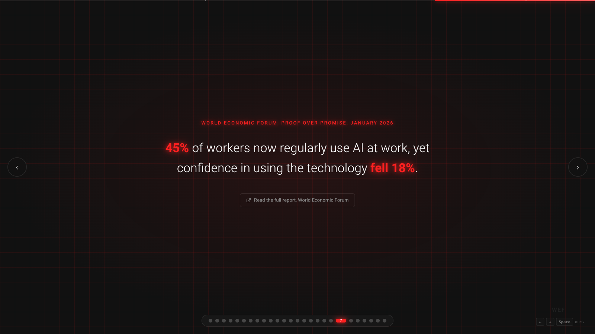
קריינות, השיטה היא הסיפור
"דוח נוסף של ה-WEF, ינואר 2026, "Proof Over Promise". והוא מציף סתירה מרתקת:"
"45 אחוז מהעובדים משתמשים ב-AI בעבודה באופן קבוע. ועם זאת, הביטחון שלהם בשימוש ירד ב-18 אחוז."
"איך זה קרה? בעיניי זה לא פרדוקס, זאת אבחנה."
"יש המון עובדים שמשתמשים ב-AI באופן ספורדי, מקליקים פה, שולחים פרומפט שם, ולא מספיק בטוחים בשימוש שלהם, ובצדק. השינוי קורה בתדירות מטורפת."
"מה שפעם הספיק עם פרומפט אחד, היום דורש משהו הרבה יותר מורכב. צריך ללמוד שיטות, סקילים, אג'נטים, להבין אותם נכון, להזין קונטקסט נכון."
"השיטה היא הסיפור. וכשמתחילים לחפש מה גורם לפער הזה, מגיעים לנקודה שדלויט שמה אצבע עליה."
Insufficient Worker Skills
~25 שניות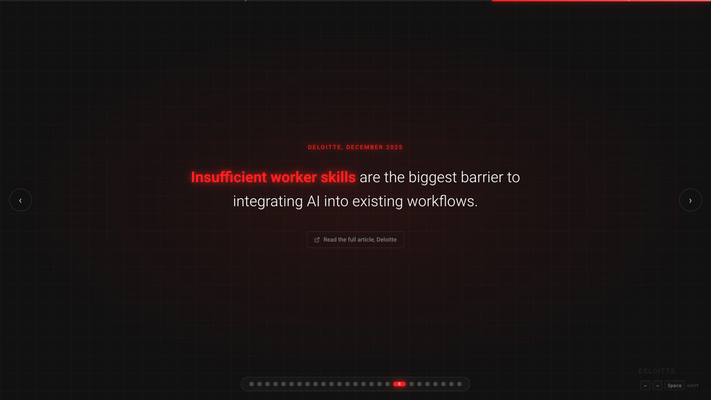
קריינות, החסם האמיתי
"דלויט, דצמבר 2025, שאלו: מה החסם הכי גדול לאינטגרציה של AI בארגונים?"
"לא טכנולוגיה. לא תקציב. לא רגולציה."
"חוסר ביכולות של עובדים. חוסר ב-Skills."
"וכאן בדיוק נכנסת הלמידה. וזה הסיפור של היום."
"לקחנו את כל המסקנות האלה, של HBR, של WEF, של Deloitte, והכנסנו אותן לתהליך. תהליך של ניתוח פערי ידע בארגון. אני לא טוען שהוא מושלם, יש בו עוד מקום רב לשיפור. אבל הוא רץ, ויש לו השפעה אמיתית."
"אז בואו נצלול."
ניתוח פערי ידע בחטיבה קמעונאית
~25 שניות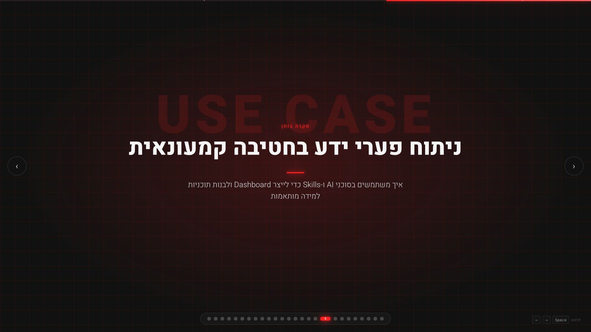
קריינות, מקרה אמיתי
"מהיום אנחנו עוברים מעולם הסטטיסטיקות והמאמרים, אל מקרה בוחן אמיתי שהתרחש בבנק הפועלים בשנת 2026."
"מקרה אחד. חטיבה אחת. 168 סניפים. 1,250 עובדים שהשיבו. 31,771 שורות תשובות."
"פרויקט שלקח לנו ימים, לא חודשים. בלי לשכור צוות פיתוח חיצוני. בלי תקציב מיוחד. הצוות שלנו, על המחשבים הניידים שלנו."
"זה הסיפור של איך בונים מערכת אג'נטית ארגונית, מאפס, בצוות קטן."
מקצועיות ושירות, מהמאקרו לעובד
~90 שניות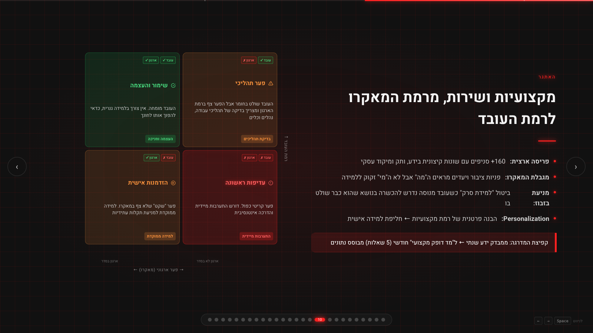
קריינות, האתגר העסקי
"בקיצור, האתגר שלנו, בנק הפועלים נמצא במקום לא טוב בשירות, וחלק משירות זה מקצועיות. אנחנו אומרים, זה משהו שצריך לתקן."
"אבל הבעיה, ברוב המקרים, היא שזה נמדד ברמת מאקרו: סקרי שביעות רצון, פניות ציבור, נתוני מאקרו של הארגון."
"מה זה נותן לנו? תמונת מאקרו. מה זה לא נותן? תמונת מיקרו."
"אנחנו עובדים עם פריסה ארצית של 168 סניפים, ובין הסניפים האלה יש שונות גדולה מאוד. אפילו במיקודים, באזורים. אזור השרון לעומת אזור דרום, באילו מוצרים, באילו שירותים מספקים לאוכלוסייה שם."
"המאקרו אומר לנו מה הבעיה. הוא לא אומר מי סובל ממנה ומה הוא צריך."
"וכשמסתכלים רק על מאקרו, אנחנו גם מבזבזים זמן של עובדים שכבר יודעים, וגם מתסכלים אותם בחוויה. עובד מנוסה שמקבל הדרכת בסיס, מתעלם, וצודק."
"לכן הבנו שאנחנו צריכים לעצב משהו שהוא חליפה מותאמת אישית באמת, לא רק סיפור על פרסונליזציה. פרסונליזציה אמיתית מצריכה לפעמים עבודה ידנית, וזה בדיוק מה שעשינו."
"החלטנו על קפיצת מדרגה: ממדד סובייקטיבי שעשינו לפני כמה שנים, למדד אובייקטיבי וגם מתמשך. מד דופק מקצועי, 5 שאלות פעם בחודש, פר עובד."
"ואיך זה מתורגם? במטריצה הזאת. ארבעה רבעים: עובד יודע / לא יודע, הארגון בסדר / לא בסדר. אם הפער מצביע גם ברמת הארגון, זה לא רק פער ידע, זה בעיה של תהליך."
השילוש הקדוש
~70 שניות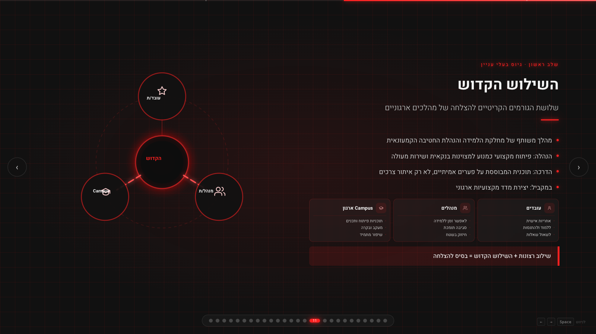
קריינות, גיוס בעלי עניין
"מה שברור לנו הוא זה: אם רוצים לעשות שינוי משמעותי, חייבים להתחיל בשלב הראשון, וזה לגייס את כל מי שרלוונטי."
"ופה כמובן את השילוש הקדוש, שלושה גורמים שצריכים לדבר אותה שפה:"
- העובד, שהוא במרכז.
- המנהל הישיר, מנהל בדרג הביניים, מנהלת הסניף.
- הקמפוס, שמייצג את הארגון, את ההנהלה. לא את עצמו, את הארגון.
"לכל אחד תפקיד מוגדר בתהליך:"
- "העובדים, אחריות אישית. ללמוד, להתנסות, לשאול שאלות."
- "המנהלים, לאפשר זמן ללמידה. לעצב סביבה תומכת, לעשות חיזוק בשטח."
- "הארגון, לעצב את התוכנית. לעשות מעקב, מדידה, שיפור מתמיד."
"ואני אגיד לכם דבר אחד שלמדנו: רק כשעושים את כל הדברים האלה ביחד, זה מצליח. אם אחד מהשלושה חסר, התוכנית קורסת."
"אנקדוטה קצרה, ביקשנו מסמנכ״ל החטיבה הקמעונאית לשלוח את המייל הראשון על המהלך, לא את מנהלת הלמידה. וזה שינה את כל החוויה של העובדים."
מאגר שאלות, מבחן ותיקוף
~75 שניות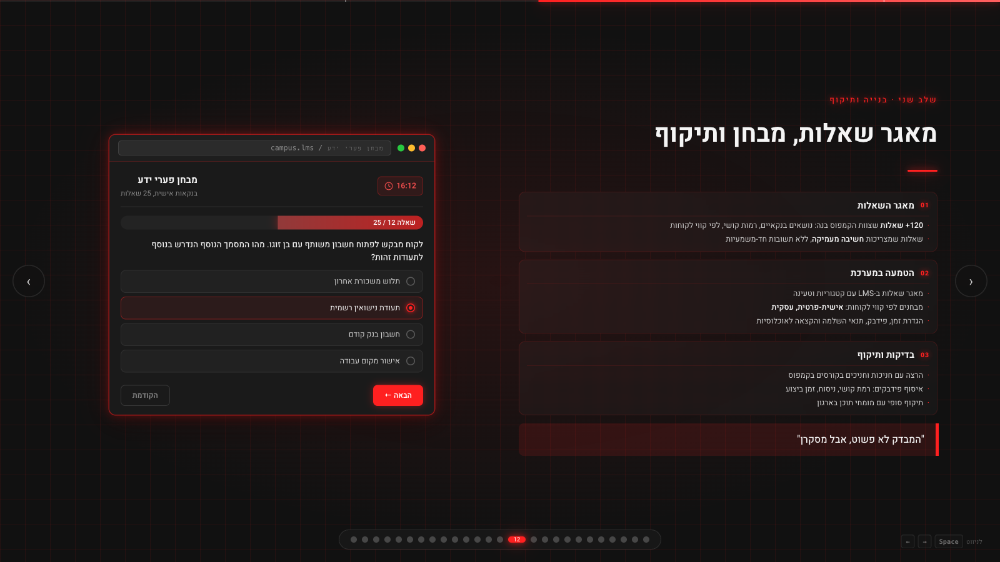
קריינות, בניית מאגר השאלות
"שלב שני, בנייה. עבדנו ביחד עם המחלקה ועם המדריכים שלנו בקמפוס, ובנינו מאגר שאלות."
"הקריטי, התפקיד של השאלות הוא לא להבין ידע מושגי. אלא ידע פרוצדורלי."
"איך הידע המושגי בא לידי ביטוי בעבודה היומיומית של הבנקאי? זאת השאלה. ולא 'מה ההגדרה של X', אלא 'מה הייתה התשובה שהוא נתן ללקוח כשהוא נשאל'."
"בנו שאלות שאמורות להצביע על פערים. ופה גם נעזרנו בבינה מלאכותית. רציתי שיהיו 50 שאלות, יצאו 75. AI עזר לי להגיע מהר יותר ובאיכות גבוהה יותר."
"אחר כך תיקפנו את זה, רצנו את זה, גם מול חניכים בקורסים אצלנו, וגם מול מומחי תוכן בארגון. וקיבלנו פידבק חשוב, ששווה להגיד אותו:"
"המבחן באמת קשה, אבל קשה ברמה המעניינת"
"השאלות לא טריוויאליות, אבל גם לא מנותקות מהיומיום. זה בלאנס שאתה מנסה לייצר בכל סוג של שאלה. וכשעובד אומר 'מסקרן', זה הרגע שאתה יודע שעבדת נכון."
קמפיין פנים-ארגוני
~55 שניות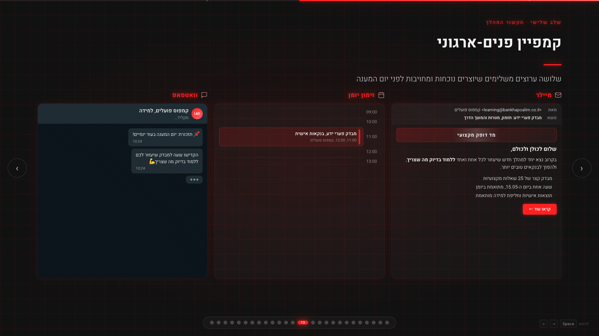
קריינות, קמפיין ותזמון
"שלב שלישי, תקשורת. המטרה שלנו לא הייתה להיות מבחן סטטיסטי, אלא לבנות תוכניות פיתוח אישיות. ולכן, אני רוצה כמה שיותר מענה."
"החלטה אמיצה: סגרנו יום ושעה שכולם עוצרים את העבודה ועושים את המבדק. זה לא 'בבקשה תמצאו זמן'. זה 'הזמן כבר ביומן שלכם'."
"יצרנו קמפיין פנים-ארגוני שכלל שלושה ערוצים משלימים:"
- "וואטסאפ, ידידותי, מהיר, מהליווי האישי בסניף."
- "זימון יומן ישיר, פעולה אקטיבית, הזמן כבר נחסם בלוח של העובדים."
- "מייל, מבית הנהלת החטיבה, לא ממחלקת הלמידה. זה משנה את הטון לגמרי."
"אגב, גם בכתיבת המייל לעובדים השתמשנו בבינה מלאכותית כדי לשפר. שום שלב בתהליך לא 'בלי AI', גם הקופירייטינג."
"השורה התחתונה של השלב הזה: תפסיקו לבקש מעובדים ללמוד. תזמינו אותם."
יום המענה
~70 שניות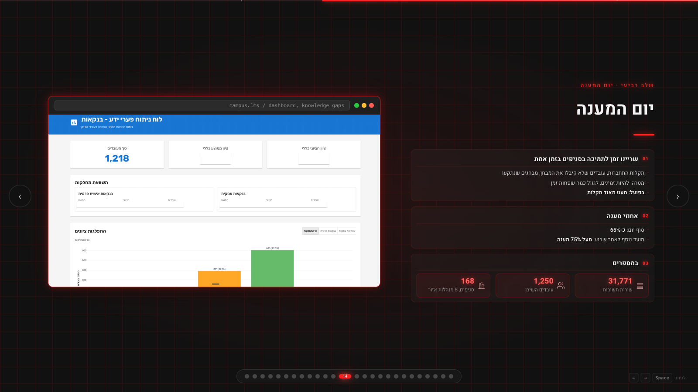
קריינות, יום המענה והמספרים
"שלב רביעי, יום המענה. אנחנו שריינו זמן בכוננות, צוות תמיכה, ציפינו לקריסה ולבעיות."
"בסוף היום הראשון, הגענו ל-65 אחוז מענה. וזה לא רע אחד, אם משווים לקמפיינים פנים-ארגוניים אחרים."
"החלטנו לעשות מועד נוסף שבועיים אחרי. וזה הביא אותנו ל-75 אחוז מענה, מספר חזק מאוד."
"במספרים:"
- 168 סניפים.
- 5 מנהלות אזור.
- 1,250 בנקאים השיבו.
- 31,771 שורות של תשובות.
"זה המגניב, יש לנו דאטה. הרבה דאטה. ובאיכות גבוהה."
"אנקדוטה קטנה, תיכננו מערך תמיכה של 6 אנשים בכוננות, חששנו מקריסה, ובסוף ספרנו 4 קריאות תקלה בלבד. זה היה הרגע שהבנו שעיצוב חוויה הוא הכל."
"אגב, גם הדשבורד הזה שאתם רואים על המסך, נבנה בעצמו ב-Claude Code. נגיע לזה בעוד שני שקפים."
31,771 תשובות, ובעיה אחת גדולה
~100 שניות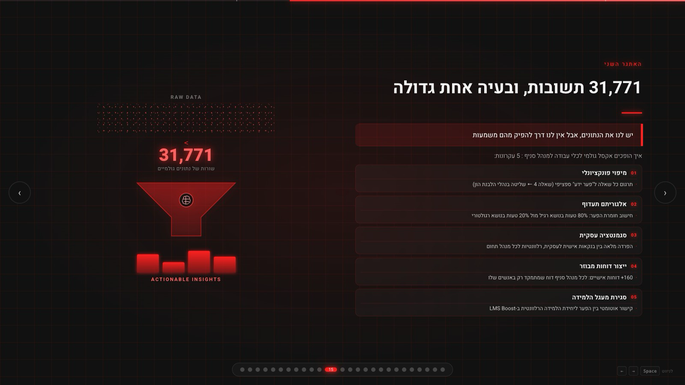
קריינות, מאקסל גולמי לתובנה
"אז יש לנו דאטה. הרבה. 31,771 שורות של תשובות. אקסל ענקי."
"ובדרך כלל, כשעובדים עם מערכות LMS, זה לא לחיצת כפתור והופ הופך לתובנה. זה דורש לא מעט עיבוד."
"וכאן בדיוק נכנסת השאלה הגדולה של ההצגה הזו: איך הופכים אקסל גולמי לכלי עבודה למנהל סניף?"
"בעולם הישן, היו לנו שתי אופציות:"
- "אופציה אחת, להשקיע המון זמן ואנשים עם מיומנויות ניתוח נתונים יחסית גבוהות. זה דורש בדרך כלל מנתח עסקי במשרה מלאה למספר שבועות."
- "אופציה שנייה, לבקש מספק חיצוני שיעשה לנו את הניתוח. זה אומר רכש, כסף, חוזה, זמן."
"היום, אנחנו, מחלקת הלמידה, יכולים לעשות את זה בעצמנו. בעבודה נכונה, לא ב'קוסמות'."
"בנינו תהליך מבוסס על חמישה עקרונות:"
- מיפוי פונקציונלי, כל שאלה מתורגמת לפער ספציפי.
- אלגוריתם תעדוף, כי לא כל פער שווה. 80% טעות בנושא רגיל אינו דומה ל-20% טעות בנושא רגולטורי.
- סגמנטציה עסקית, הפרדה מלאה בין בנקאות אישית לעסקית.
- ייצור דוחות מבוזר, 211 דוחות אישיים, אחד לכל מנהל סניף.
- סגירת מעגל הלמידה, פער ← הדרכה ספציפית ב-Boost LMS.
"ואת כל זה, הבנתם נכון, בנינו על המחשב הנייד שלי. בלי שרת בענן. בלי להעביר נתונים החוצה. בלי תקציב מיוחד."
גייסנו אנליסט ב-100$
~30 שניות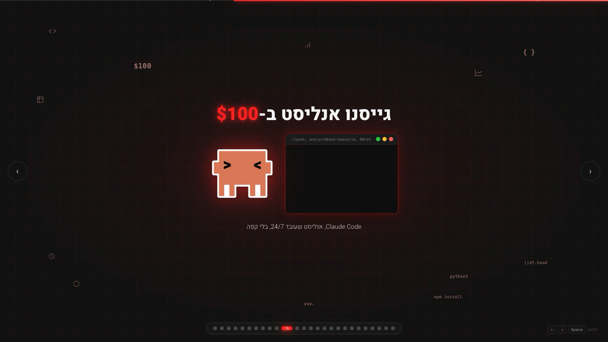
קריינות, האנליסט שלנו
"בעצם, מה שעשינו, זה שגייסנו אנליסט במאה דולר."
"כן, אתם שמעתם נכון. מאה דולר. זה מחיר מנוי Claude Code Max עם credits, לחודש שלם."
"ולמעשה, מה שקרה הוא ששכרנו אותו לעבודה במשך חודש שלם. היה לנו אנליסט נתונים שעובד 24 שעות ביממה. בלי לבקש קפה. בלי לבקש העלאה. בלי חופשה."
"וזה הפאנץ' שאני רוצה שתקחו איתכם: Claude Code לא החליף אותי. הוא שחרר אותי. הזמן שלי עבר מעבודה ב-Excel, מטריצות, נוסחאות, לחשיבה אסטרטגית, מה לעשות עם הנתונים, איך לעצב את החוויה, איך להגיע למנהל הסניף."
מנוע זיהוי הפערים, HITL
~90 שניות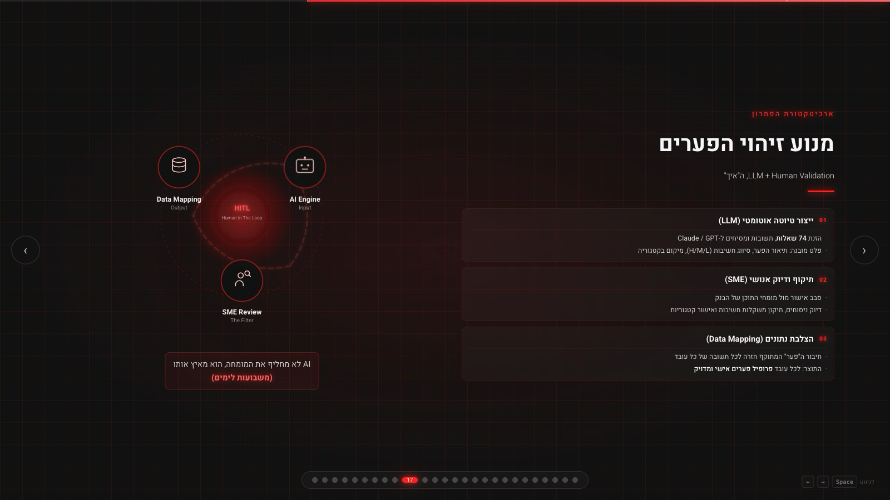
קריינות, ה-HITL ושיטת ההפיכה
"עכשיו אני נכנס לחלק הטכני, אבל אני אדבר עליו בגדול, לא לעומק."
"הסוד שלנו, שיטה אחת בעיקר: בעבר, היינו צריכים מומחה תוכן שיעבור על כל שאלה במאגר ויגיד 'השאלה הזו מצביעה על פער X'. זה לקח שבועות."
"אנחנו הפכנו את התהליך. במקום לתת למדריכים להגדיר על מה כל שאלה מצביעה, עבדנו הפוך:"
- "נתנו למודל שפה לנתח את השאלות, ולחזור אלינו עם הצעה: 'השאלות הבאות מצביעות על הפערים הבאים'."
- "המדריכים רק אישרו ותיקנו, במקום לכתוב מאפס."
"זה חסך לנו שבועות של עבודה. רמת הדיוק של ה-LLM הייתה גבוהה מאוד, שמונים אחוז מהדברים הוא כתב נכון. רק 20% הצריכו תיקון. המדריכים פה דייקו, לא יצרו."
"וזה נקרא HITL, Human In The Loop. ה-AI לא מחליף את המומחה, הוא מאיץ אותו. המומחה האנושי הוא הסמכות, ה-AI הוא הכלי שעובד מהר."
"כמובן שהפרדנו בין קווי לקוחות, אישית ועסקית, לא לערבב. ובסוף קיבלנו פרופיל פערים אישי ומדויק לכל בנקאי שהשיב למבחן: מה היו השאלות שקיבל, מה הייתה התשובה שלו, מה הייתה צריכה להיות התשובה הנכונה, ועל אילו פערים זה מצביע."
"גם פה, כל הניתוח הזה, נעזרנו ביכולות של Claude כדי לעבד את המידע."
ניהול צוות Sub Agents
~85 שניות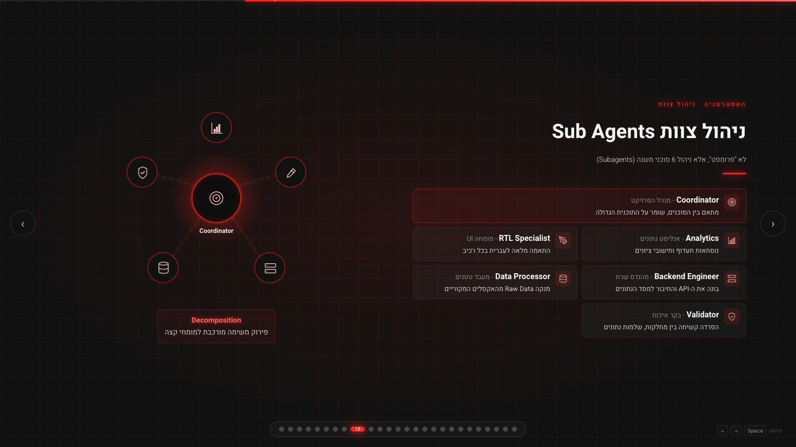
קריינות, צוות הסוכנים
"כשהבנו שהמשימה הזו הרבה יותר מסובכת מלזרוק פרומפט אחד, או אפילו לתת קופסת שאלות שלמה לנתח לבד, הלכנו על שיטה אחרת."
"בנינו צוות של תתי-סוכנים. וזה מה שמייצר את המעבר מ'אני מבקש מ-Claude לכתוב קוד', אל 'אני מבקש מ-Claude לארגן צוות שיכתוב קוד'. רמת הפשטה גבוהה יותר, איכות הרבה יותר טובה."
"מי בצוות?"
- "Coordinator, האורקסטרייטור, מנהל הפרויקט. איתו אני עובד ישירות, מקבל את המשימה הגדולה ומפרק אותה לסוכנים אחרים."
- "Analyst, אנליסט נתונים. נוסחאות תעדוף וחישובי ציונים."
- "Backend Engineer, מהנדס שרת. כל מיני חישובים, קריאות API."
- "RTL Specialist, מומחה לעברית. קריטי לבנק, RTL, ניקוד, פונטים."
- "Data Processor, מנקה את האקסלים המקוריים, את הנתונים הגולמיים."
- "Validator, בקר איכות. בודק שהפרדות בין מחלקות נשמרות. פעם הוא תפס שמחלקה מסוימת, שחשבנו שהיא אישית, היא בעצם עסקית, ועצר אותנו בזמן."
"זה מעבר לפירוק של משימה מורכבת למשימות קטנות, מנוהלות על ידי תתי-סוכנים. זה צוות מקצועי, עם הפרדת רשויות, עם אחריות, עם בקרה. בדיוק כמו צוות אנושי."
למה חשוב להשתמש בסקילים?
~100 שניות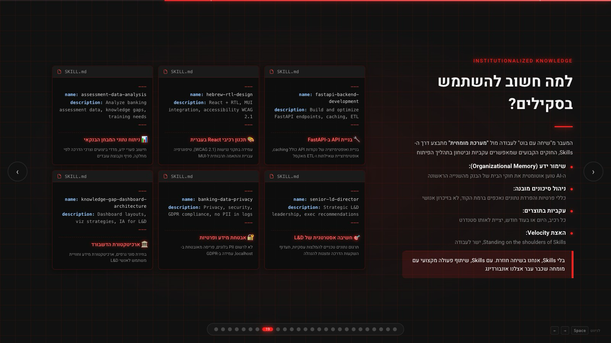
קריינות, ה-DNA הארגוני
"פירוק לתתי-סוכנים זה התחלה. אבל זה לא היה מספיק. אנחנו רוצים שהסוכן ידע מה לעשות, מהשנייה הראשונה."
"אז מעבר לתתי-סוכנים, הוספנו על גביהם שישה Skills. אחד לכל סוכן."
"מה זה Skill בעצם? סקיל זה בסוף קובץ טקסט. קובץ MD, מה שנקרא Markdown, פשוט. שמגדיר:"
- "הגדרת התפקיד של הסוכן."
- "תהליך העבודה שאני רוצה שיעקוב אחריו."
- "אזורי האחריות שלו, מה מותר ומה אסור."
- "הקונטקסט הבנקאי, אנחנו בנק, יש לנו רגולציה, אסור לרשום PII."
"דוגמאות מהפרויקט:"
- "Skill שמסביר איך לנתח את המבדק, מהי שאלה, מהם פערים, איך לחשב חומרה."
- "Skill שמסביר את הארכיטקטורה הנכונה של הדשבורד, איזה גרפים, איזה צבעים, איזה היררכיה."
- "Skill לפרטיות, אסור לרשום PII בלוגים, להמיר תעודות זהות לזהויות פיקטיביות, GDPR. על זה מירב הוסיפה את ה-Skill הזה במיוחד."
"למה זה חשוב? למה לא רק להגיד לסוכן בכל שיחה?"
- "שימור ידע ארגוני, ה-AI טוען אוטומטית את חוקי הבית מהשנייה הראשונה."
- "ניהול סיכונים מובנה, כללי פרטיות נאכפים בקוד, לא בזיכרון אנושי."
- "עקביות בתוצרים, כל רכיב שייצא, בעוד חודש או בעוד שנה, יציית לאותו סטנדרט."
- "האצת Velocity, אנחנו עומדים על הכתפיים של ה-Skills, ישר לעבודה."
"השורה התחתונה: בלי Skills, אנחנו בשיחה חוזרת על אותם דברים. עם Skills, זה כמו שיתוף פעולה מקצועי עם מומחה שכבר עבר אצלנו אונבורדינג."
211 דוחות מותאמי Workflow
~80 שניות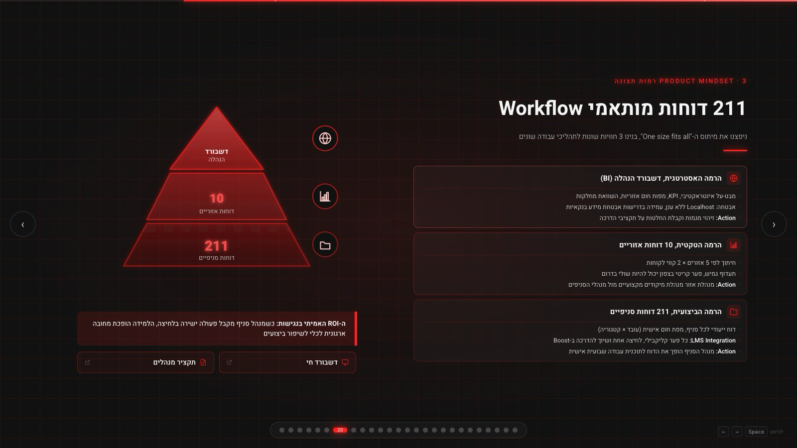
קריינות, שלוש רמות תצוגה
"אחרי שיש לנו פערים אישיים מדויקים, השאלה הגדולה הבאה: איך מציגים את זה? מי המשתמש, ומה הוא צריך לראות?"
"ניפצנו את אגדת ה-One Size Fits All. במקום דשבורד אחד שמשרת את כולם בצורה בינונית, בנינו שלוש חוויות שונות, אחת לכל קהל יעד:"
- "הרמה האסטרטגית, דשבורד הנהלה אחד, ל-VP החטיבה ולסמנכ״לים. KPI ארגוני, מפות חום אזוריות, השוואת מחלקות. הכל ב-localhost, ללא ענן, עומדים בדרישות אבטחת מידע בנקאיות."
- "הרמה הטקטית, 10 דוחות אזוריים, אחד לכל מנהלת אזור. כי הפער הקריטי באזור הצפון, יכול להיות שולי באזור הדרום, וצריך גמישות."
- "הרמה הביצועית, 211 דוחות סניפיים. דוח ייעודי לכל מנהל סניף, מפת חום אישית של עובד מול קטגוריה. כל פער קליקבילי, לחיצה אחת, ושיוך להדרכה ב-Boost LMS."
"וזה הקטע החשוב, אני רוצה שתקחו אותו איתכם: ה-ROI האמיתי הוא בנגישות. מנהל סניף לא רוצה לראות את כל החטיבה. הוא רוצה לראות את הסניף שלו, ובלחיצה אחת לפתוח את ההדרכה הרלוונטית."
"ה-Integration עם Boost LMS היה הרגע שהפרויקט הפך מ'דוח מעניין' ל'כלי עבודה'. הלמידה הופכת מחובה ארגונית, לכלי לשיפור ביצועים."
מה מקבל העובד/ת?
~55 שניות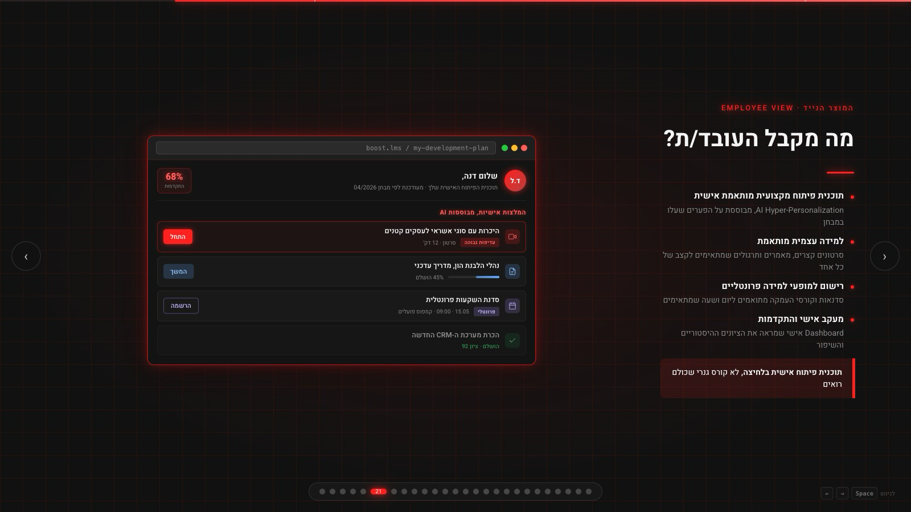
קריינות, חוויית העובד
"רגע, בואו נצא מהמנהלים ונדבר על העובד עצמו. הזווית האנושית."
"כשדנה, בנקאית בסניף 412, פותחת את LMS Boost בבוקר, מה היא רואה?"
"אני יודע להגיד שדנה, שבאה וקיבלה את השאלות X-Y-Z, ענתה להן ככה. ועל השאלות האלה היא הייתה צריכה לענות אחרת. ויש לי יחידות למידה רלוונטיות במערכת."
"בעצם, אני בונה את תוכנית הפיתוח של דנה אוטומטית, מהפערים שעלו אצלה. וזה מה שהיא רואה:"
- "תוכנית פיתוח אישית, מבוססת AI Hyper-Personalization."
- "למידה עצמית מותאמת, סרטונים קצרים, מאמרים, תרגולים, בקצב של דנה."
- "רישום למפגשים פרונטליים, סדנאות וקורסי העמקה מתואמים ליום ושעה שלה."
- "Dashboard אישי, שמראה את ההתקדמות שלה לאורך זמן."
"השורה התחתונה: זה לא 'קורס שכולם צריכים לעשות'. זו תוכנית פיתוח אישית של דנה, רק שלה."
מה מקבל המנהל?
~55 שניות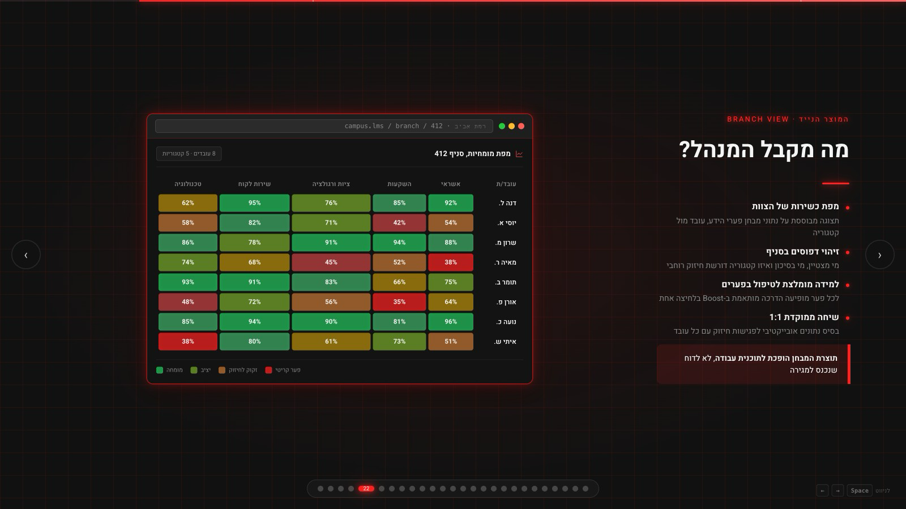
קריינות, חוויית המנהל
"ועכשיו, מנהלת הסניף, יעל, פותחת את אותה מערכת."
"מה היא רואה? מפת מומחיות צבעונית של כל הצוות שלה. כל עובד מול כל קטגוריה."
- "ירוק 90% ומעלה, מומחים. הזדמנות להפוך אותם לחונכים."
- "צהוב 70-90%, יציבים, אין סיבה לדאגה."
- "כתום 50-70%, זקוקים לחיזוק, להעלות לרדאר."
- "אדום מתחת ל-50%, פער קריטי, התערבות מיידית."
"מעבר לזה, יש לה: זיהוי דפוסים בסניף, מי מצטיין, מי בסיכון, איזו קטגוריה דורשת חיזוק רוחבי. למידה מומלצת לכל פער, בלחיצה אחת. בסיס לשיחות 1:1 ממוקדות עם כל עובד."
"השורה התחתונה: תוצאות המבחן הופכות לתוכנית עבודה שבועית של המנהלת. לא לדוח שנכנס למגירה."
"אנקדוטה, מנהלת אזור התקשרה אליי בשבוע השני: 'רגע, איך אני מסבירה את ה-95% של נועה? היא בעצם מומחית בהשקעות. אולי כדאי לחשוב עליה כחונכת'? בדיוק זה הלקח, מהדשבורד יוצאות החלטות עסקיות, לא רק הדרכה."
סיכום ולקחים, ה-AI כשותף פיתוח
~110 שניות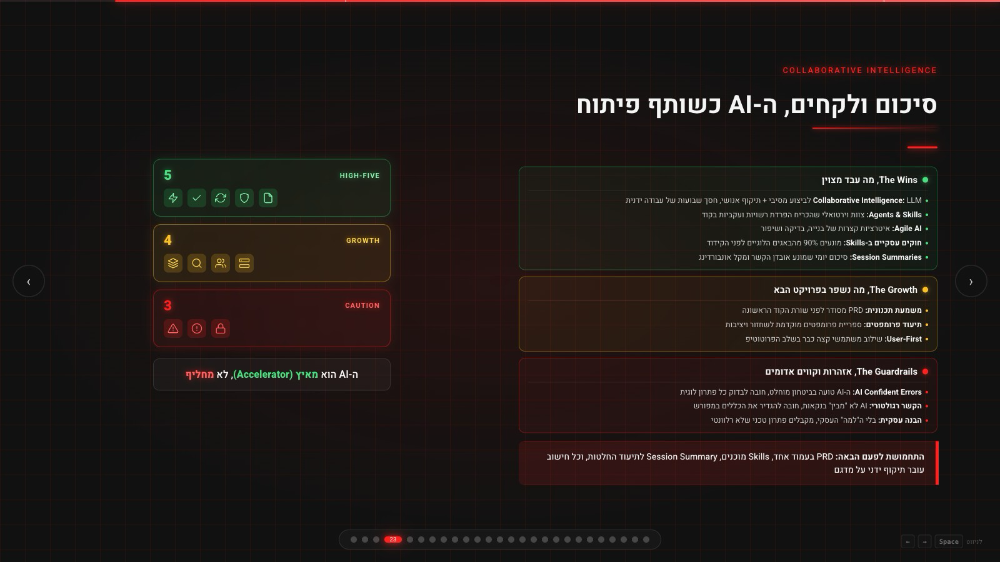
קריינות, רטרוספקטיבה
"אז סיכום ולקחים. הצגתי הרבה דברים, ואני רוצה לתת לכם רטרוספקטיבה אמיתית: מה עבד, מה לא עבד, ומה אני אעשה אחרת בפעם הבאה."
The Wins, מה עבד מצוין:
- "Collaborative Intelligence, LLM לביצוע מסיבי + תיקוף אנושי. חסך לנו שבועות של עבודה ידנית."
- "Agents & Skills, צוות וירטואלי שהכריח אותנו להפרדת רשויות ולעקביות בקוד."
- "Agile AI, איטרציות קצרות של בנייה, בדיקה, ושיפור."
- "חוקים עסקיים ב-Skills, מנעו 90% מהבאגים הלוגיים לפני שכתבנו שורת קוד."
- "Session Summaries, סיכום יומי שמונע אובדן הקשר ומקל אונבורדינג ליום הבא."
The Growth, מה נשפר בפרויקט הבא:
- "משמעת תכנונית, PRD מסודר לפני שורת הקוד הראשונה. אנחנו עפנו על זה הפעם."
- "תיעוד פרומפטים, ספריית פרומפטים מוקדמת לשחזור ויציבות."
- "User-First, שילוב משתמשי קצה כבר בשלב הפרוטוטיפ."
The Guardrails, האזהרות, הקווים האדומים:
- "AI Confident Errors, ה-AI טועה בביטחון מוחלט. חובה לבדוק כל פתרון לוגית."
- "הקשר רגולטורי, AI לא מבין בנקאות. חובה להגדיר את הכללים במפורש."
- "הבנה עסקית, בלי 'למה' עסקי, מקבלים פתרון טכני שלא רלוונטי."
"השורה התחתונה: ה-AI הוא מאיץ (Accelerator), לא מחליף. אם אנחנו לא יודעים מה לעשות, ה-AI יהיה רק אנליסט מהיר שטועה."
AI זה לא קסם
~35 שניות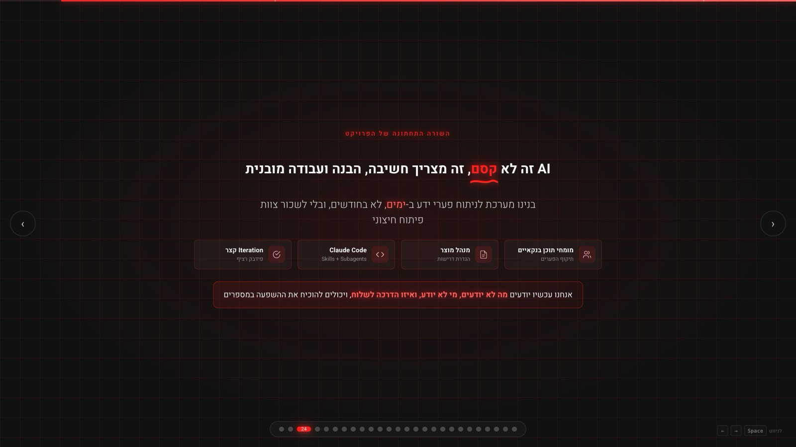
קריינות, השורה התחתונה
"השורה התחתונה של כל הסיפור הזה: AI זה לא קסם."
"זה דורש חשיבה. זה דורש הבנה עסקית. זה דורש עבודה מובנית."
"המתכון שלנו: מומחי תוכן בנקאיים, מנהל מוצר, Claude Code עם Skills ו-Subagents, ואיטרציות קצרות. כל אחד מהמרכיבים האלה הוא קריטי, ואי אפשר לוותר על אף אחד."
"ועם כל המרכיבים האלה ביחד, בנינו מערכת שלמה לניתוח פערי ידע, בימים, לא בחודשים. בלי לשכור צוות פיתוח חיצוני."
"היום, אנחנו יודעים מה לא יודעים, מי לא יודע, ואיזו הדרכה לשלוח. ויכולים להוכיח את ההשפעה במספרים."
תודה
~20 שניות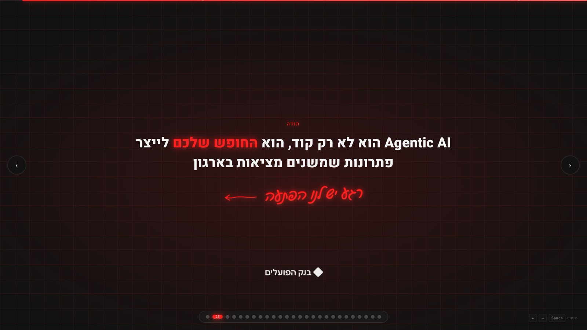
קריינות, סיום + הפתעה
"Agentic AI הוא לא רק קוד. הוא החופש שלכם לייצר פתרונות שמשנים מציאות בארגון."
"וברגע שאתם, אנשי הלמידה, מבינים את זה, אתם הכוח האמיתי בארגון."
"רגע, יש לי הפתעה אחת לפני שאני יורד מהבמה."
Knowledge Gap Analysis Skill
~40 שניות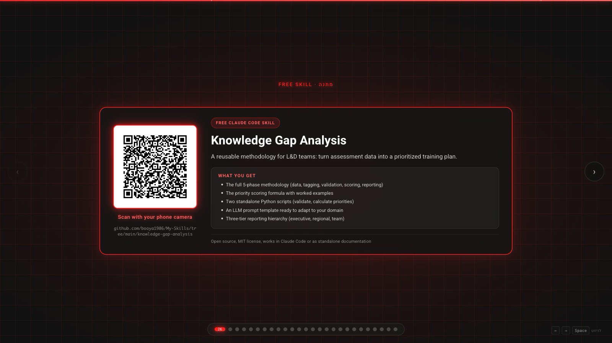
קריינות, המתנה
"כל התהליך שדיברנו עליו, עשיתי ממנו Skill חופשי."
"עשיתי reverse engineering על הפרויקט שלנו, וייצאתי החוצה את ה-Skill הזה. Knowledge Gap Analysis, פתוח לחלוטין, ב-GitHub, מהיום."
"מה אתם מקבלים?"
- "כל המתודולוגיה של 5 הפאזות, מהדאטה ועד הדוחות."
- "נוסחת תעדוף הפערים עם דוגמאות עובדות."
- "שני סקריפטים בפייתון לאימות וחישוב סדרי עדיפויות."
- "תבנית פרומפט ל-LLM שתוכלו להתאים לדומיין שלכם."
- "ארכיטקטורת דיווח בשלוש רמות, ניהולי, אזורי, צוותי."
"סרקו את ה-QR בטלפון. או גשו לקישור ב-GitHub. תוכלו להתקין את הסקיל ולהשתמש בו לכל פרויקט אצלכם, לאו דווקא בנקאות."
"ואם אתם נתקלים, פנו אליי. אני בא לעזור. תודה רבה לכולכם, אני אבי לוי. בואו אחר כך לשאלות, יש לי שאלות גם אליכם!"